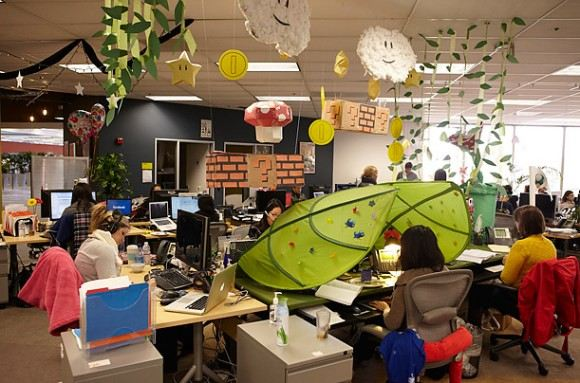

A Push WebSystems foi fundada em 1999 e desde o início ofereceu aos seus clientes soluções inteligentes e práticas em TI. Construiu ao longo de sua trajetória parcerias de sucesso com importantes players do mercado, como HP e Microsoft. A partir de 2009, expandiu sua atuação para fora de Teresópolis e hoje, conta com seis escritórios no Brasil nas regiões Sul, Sudeste e Centro-Oeste. Além dos escritórios, a Push WebSystems está presente também nas demais regiões do Brasil, por meio de projetos em andamento e profissionais alocados em diferentes clientes. O segredo de se manter em um mercado tão competitivo, está na constante preocupação na qualidade dos serviços oferecidos e, principalmente, na construção de um time de alta performance, capaz de manter a excelência nas soluções para todos os clientes.
Por trás do bons resultados de muitas empresas de sucesso em todo o Brasil, existem soluções oferecidas pela Push WebSystems. São empresas de diferentes portes e segmentos, que contam com a Push WebSystems para entender suas necessidades e oferecer soluções personalizadas. A Push WebSystems tem como missão “trazer a Tecnologia da Informação na forma de soluções práticas e viáveis no suporte ao dia a dia dos nossos clientes”. Por isso, é incansável na busca por novos produtos e serviços que possam de fato resolver os problemas e otimizar os recursos nas empresas que a contratam. No mercado desde 1999, a Push WebSystems oferece consultoria especializada em implementação, suporte e monitoramento para seus clientes diretos e integradores, sempre com o mais alto padrão de qualidade. Seja você um profissional de TI em busca de soluções ou um empreendedor que precisa de ajuda especializada em tecnologia, você pode contar com a Push WebSystems.
Um dos segredos do sucesso da Push WebSystems é, sem dúvida, o seu time. São profissionais extremamente qualificados, que passam por um processo de seleção criterioso e estão em constante capacitação. Além disso, os perfis dos profissionais também são levados em conta na hora da alocação nos projetos, tudo para que os clientes recebam a melhor experiência possível. Todos esses cuidados garantem um time de alta performance, focados em oferecer os melhores resultados para cada cliente. Hoje, temos recursos alocados em projetos e operações em mais de 12 estados, em todas as regiões do Brasil. Além de equipes de profissionais nos nossos seis escritórios no Sul, Sudeste e Centro-Oeste.